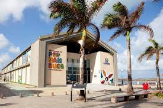
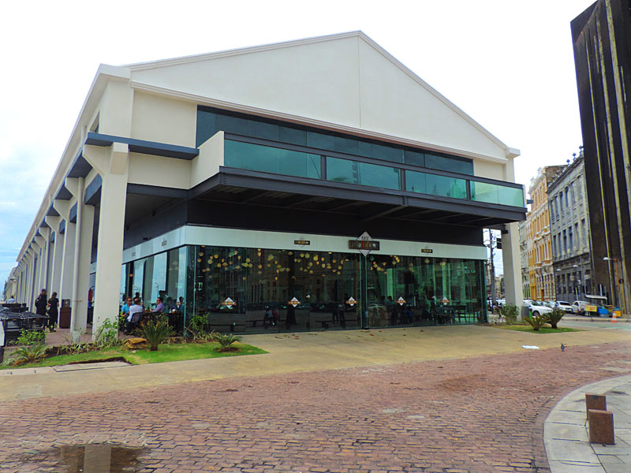

Parte da região histórica do Recife Antigo, a praça é o local de onde se inicia a medição das distâncias das estradas do estado.
História
A Praça Rio Branco mais conhecida como Praça do Marco Zero em Recife, foi o ponto de origem da capital Pernambucana, foi instalado dia 31 de Janeiro de 1938, feito pelo artista plástico pernambucano Cícero Dias, no chão é possível ver a Rosa dos Ventos e sua frase “Eu vi o mundo… Ele começava no Recife”.
Gastronomia e Lazer
Centro de Artesanato de Pernambuco

Um amplo espaço instalado no antigo armazém 11 com exposição e venda de peças artesanais produzidas por artesãos pernambucanos.
O centro abre de segunda à sábado (9:00-19:00) e no domingo (10:00-16:00).
Centro de Artesanato de Pernambuco

São diversos bares, sorveterias e restaurantes, além de um centro de artesanato, às margens do encontro do Rio Capibaribe com o mar. A área livre proporciona ainda vista privilegiada para o Parque de Esculturas de Francisco Brennand. A previsão é de que novos estabelecimentos ocupem o espaço em breve, incluindo lojas.